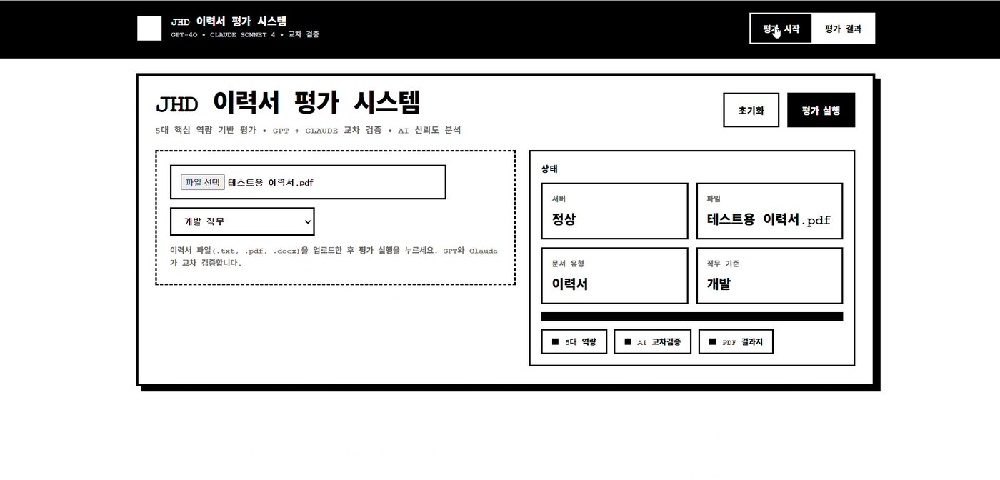
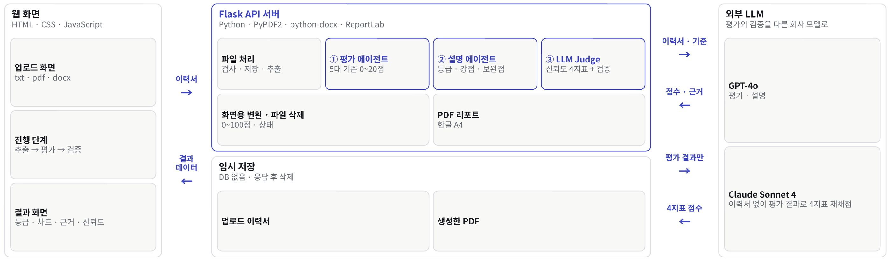
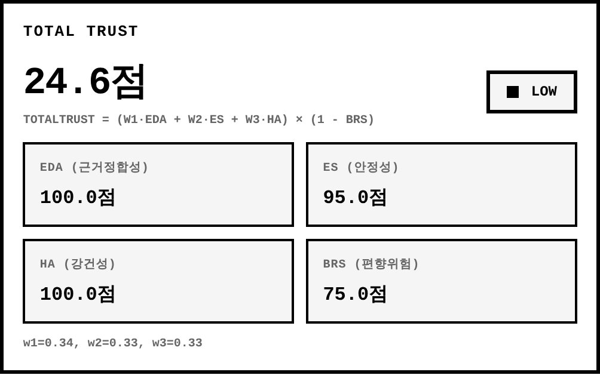
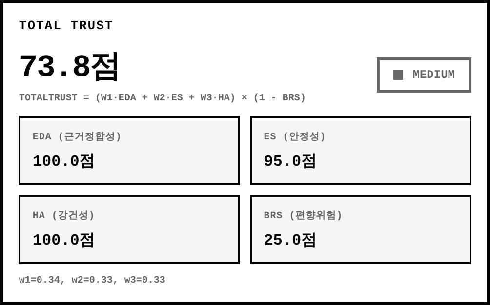
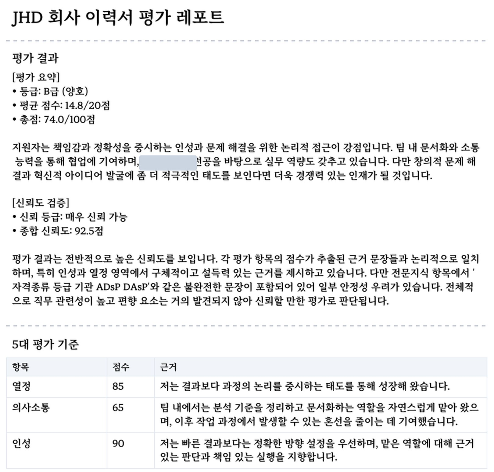

01
개요


문제
- AI 서류 평가는 빠르게 늘지만 왜 그 점수인지 설명하지 않는 블랙박스
- 형식만 바꾸거나 키워드를 반복해도 점수가 달라질 수 있음
해결
- 점수마다 이력서 속 근거 문장을 붙이고
- 그 점수를 믿어도 되는지를 신뢰성 4지표와 다른 회사 모델(Claude)의 교차검증으로 함께 평가
내 역할
기획 · 발표 자료“점수가 아니라 신뢰를 평가한다”는 문제 정의와 발표 자료 제작
프로토타입1~3차 버전을 혼자 만들며 신뢰성 감사 → 기업용 기준 → 서버 분리로 발전
에이전트 흐름평가 · 설명 에이전트 흐름 설계
서버최종 버전 Flask API 서버 · 파일 처리 · PDF 리포트
고도화종합 신뢰도 92.5인데 최종 신뢰 점수만 24.6인 모순을 보고, 서버와 화면이 점수 방향을 다르게 읽던 곳을 찾아 수정 → 73.8 (2026.10 고도화)
02
평가는 GPT로, 검증은 Claude로

이력서 한 건이 처리되는 과정
파일 확인 · 글자 추출txt · pdf · docx에서 텍스트를 꺼냄
평가 에이전트 · GPT-4o5대 기준을 하나씩 채점하고, 기준마다 이력서 속 근거 문장
설명 에이전트등급 S~D · 강점 · 보완점 · 종합 의견
LLM Judge · Claude신뢰성 4지표 계산 + Claude가 이력서 없이 평가 결과만 받아 4지표를 다시 채점(일치도에만 쓰이고 종합 신뢰도에는 안 들어감)해 일치도 계산
결과 화면 · PDF100점 만점으로 바꿔 응답하고 업로드 파일 삭제
평가
기준별 20점 만점 13 · 14 · 14 · 18 · 17 (창의성 · 의사소통 · 전문지식 · 인성 · 열정), 항목마다 근거 문장
설명
A급 (우수) 76.0점, 강점 인성 · 열정 / 보완점 창의성
검증
종합 신뢰도 92.5 · Claude 교차검증 일치도 70%
신뢰성 4지표
근거정합성기준별 점수 구간과 근거 문장 개수가 맞으면 1, 아니면 0.5 → 평균
안정성5개 기준 점수의 표준편차가 작을수록 높음
강건성근거가 있는 기준이 많고, 근거가 많을수록 높음
편향위험점수 최고 − 최저 차이가 클수록 위험, 100 − 위험도로 표시 (높을수록 안전)
설계 포인트
- 평가와 검증을 다른 모델로: GPT가 스스로를 검증하지 않도록 Claude가 이력서 없이 평가 결과만 받아 4지표를 다시 채점(일치도에만 쓰이고 종합 신뢰도에는 안 들어감)
- 숫자는 코드, 문장은 GPT: 등급 · 강점은 점수로 계산해 항상 같은 결과, 요약 · 종합 의견만 GPT가 작성
- 기준 교체 가능: 5대 기준은 가상 기업 JHD의 기준표. 기준 이름 · 설명 · 키워드만 바꾸면 다른 회사 기준으로 평가
내 역할
03
신뢰성 감사에서 시작한 네 단계 버전
1차 신뢰성 감사: 점수의 변동폭으로 판정
변형 이력서 만들기같은 글 반복 5회 · 형식 변형 3종 · 키워드 반복
케이스마다 LLM 채점이력서 1개당 11개 이상 케이스
점수 변동폭 계산반복 표준편차 · 형식 간 차이 · 키워드 상승폭
정상 · 주의 · 위험 판정예: 형식 차이 20점 이상 → “포맷에 따라 평가가 흔들릴 수 있음”
믿을 만한 평가라면 뜻이 같은 이력서들의 점수가 거의 같아야 한다는 생각에서 출발
버전별 발전
1차 · 신뢰성 감사Streamlit · 변동폭 판정
2차 · 기업 전용 감사인사 · 마케팅 · 개발 직무 기준 고정, PDF 리포트 도입
3차 · 서버와 웹 화면 분리FastAPI 서버 + 업로드 · 진행 단계 · 레이더 차트 화면 초안
최종 · 다중 에이전트 + 교차검증GPT 평가 + Claude 검증 구조, 서버는 Flask로 정리
3차의 업로드 · 진행 단계 · 레이더 차트 화면이 최종 화면의 원형
04
Flask API 서버Flask · PyPDF2 · python-docx · ReportLab
| 주소 | 방식 | 하는 일 |
|---|---|---|
/health | GET | 서버 상태 확인 (화면이 시작할 때 호출) |
/api/review | POST | 이력서 파일을 받아 평가 결과 JSON으로 응답 |
/api/report/pdf | POST | 화면 결과를 받아 A4 PDF 리포트로 응답 |
파일을 안전하게 받기
검사16MB 제한, txt · pdf · docx만 허용, 빈 파일 · 글자 없는 파일은 이유와 함께 오류 응답
추출txt는 인코딩 3가지 순서로 시도, pdf · docx는 페이지 · 문단 단위로 추출
개인정보업로드 이름 대신 시각 기반 새 이름으로 저장, 성공 · 실패 모두 처리 후 삭제
PDF 리포트 만들기
결과 JSON화면이 그대로 전송
ReportLab한글 폰트 등록
A4 리포트응답 후 삭제
총평 → 평가 결과 → 기준별 점수 · 근거 → 신뢰성 지표 순서
05
Total Trust 계산 오류 수정2026.10 고도화


원인
설계 정의BRS = 편향 위험도 (높을수록 위험) → 공식에서 (1 − BRS)를 곱함
평가 엔진편향위험 = 100 − 위험도 (높을수록 안전)로 계산해서 보냄
화면 계산이름만 보고 위험도로 받아 그대로 (1 − 값)에 넣음 → 방향이 거꾸로
계산 과정
| 단계 | 수정 전 | 수정 후 |
|---|---|---|
| 가중합 | 0.34·100 + 0.33·95 + 0.33·100 = 98.35 | |
| BRS로 쓰인 값 | 75 (안전 점수) | 100 − 75 = 25 (위험도) |
| × (1 − BRS) | 98.35 × 0.25 = 24.6 | 98.35 × 0.75 = 73.8 |
해결과 확인
- 수정: 화면 공식에 넣기 전에 100 − 값으로 위험도로 되돌림
- 확인: 시연 영상의 실제 값을 고친 화면에 넣어 24.6 → 73.8로 바뀌는 것을 재현
같은 화면에 보이는 두 신뢰 점수
| 점수 | 계산 |
|---|---|
| 종합 신뢰도 92.5 | 신뢰도 4지표의 평균 (서버 계산) |
| 최종 신뢰 점수 73.8 (2026.10 고도화 후) | 근거정합성 · 안정성 · 강건성 가중 합 × (1 − 편향 위험) (화면 계산) |
06
결과
시연 이력서 한 건은 A급 76.0점으로 평가되었습니다. 종합 신뢰도 92.5는 신뢰도 4지표의 평균이고, 최종 신뢰 점수 73.8(2026.10 고도화 후)은 가중 합에 편향 위험을 반영한 값입니다.

시연 이력서 한 건의 결과
평가A급 (우수) 76.0점, 강점 인성 · 열정 / 보완점 창의성
근거기준마다 이력서 속 문장 최대 3개
신뢰도4지표 100 · 95 · 100 · 75 → 종합 92.5 매우 신뢰
교차검증Claude 일치도 70%
| 항목 | 점수 | 이력서에서 찾은 근거 |
|---|---|---|
| 창의성 | 13 / 20 | 기술을 ‘잘 만드는 것’보다 올바르게 사용하는 것의 중요성을 배우게 되었습니다. |
| 의사소통 | 14 / 20 | 프로젝트를 수행할 때에는 속도보다 일관성과 검증 가능성을 중시합니다. 기준이 모호한 상태에서 성급하게 결과를 내기보다는, 초기 정의와 전제를 정리한 뒤 단계적으로 진행합니다. 그 결과 팀 내에서는 분석 기준을 정리하고 문서화하는 역할을 자연스럽게 맡아 왔으며, 이후 작업 과정에서 발생할 수 있는 혼선을 줄이는 데 기여했습니다. |